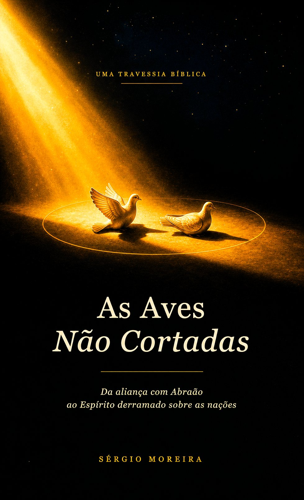

Teologia · Aliança · Tipologia
Disponível também em 🇺🇸 Inglês e 🇪🇸 Espanhol
Um mergulho na aliança de Deus com Abraão em Gênesis 15 — e o que as aves que não foram cortadas revelam sobre a redenção em Cristo.
Sérgio Moreira · 2026

"Aconteceu que, quando o sol se punha e havia trevas cerradas, eis que um forno fumegante e uma tocha de fogo passaram por entre aquelas metades." Gênesis 15:17
Sobre a obra
Em Gênesis 15, Abraão parte os animais do pacto ao meio — mas não corta as aves. Esse detalhe, aparentemente menor, carrega uma densidade teológica que atravessa toda a Escritura.
Este livro investiga o silêncio tipológico das aves intactas: quem elas representam, por que não foram cortadas, e como esse gesto antecipa a obra expiatória de Cristo — o portador que atravessa a morte sem ser partido.
Com base exegética no hebraico bíblico e em diálogo com a tradição teológica reformada, a obra tece conexões entre a aliança abraâmica, o sistema levítico e o Novo Testamento.
Análise detalhada do hebraico original e do contexto do rito de aliança no Antigo Oriente Médio.
Como as aves não cortadas antecipam a pessoa e obra de Cristo como portador da aliança.
Gálatas 3, Hebreus, Apocalipse — a tipologia atravessa os dois Testamentos em plena coerência.
A soberania de Deus na ratificação unilateral do pacto abraâmico e suas implicações para a soteriologia.
O autor
Teólogo com mestrado em Teologia, professor de Formação Cristã e membro ativo de uma comunidade presbiteriana. Seu percurso intelectual é marcado pelo estudo aprofundado das línguas bíblicas — hebraico e grego — e pelo interesse particular em hermenêutica e tipologia do Antigo Testamento.
As Aves Não Cortadas nasce de uma convicção de que o Antigo Testamento não é apenas prelúdio do Novo, mas presença rica e articulada do mesmo Evangelho — aguardando ser lido com olhos que enxergam Cristo em cada pacto, em cada rito, em cada detalhe.
A obra é o fruto de anos de pesquisa, reflexão pastoral e amor profundo pela Palavra.
Disponível em
Escolha a plataforma de sua preferência
Outras edições
Cada edição é uma tradução completa do livro, vendida diretamente na Amazon do respectivo país